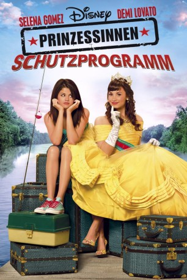
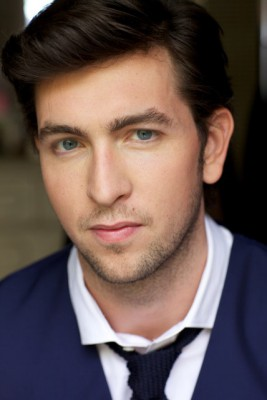
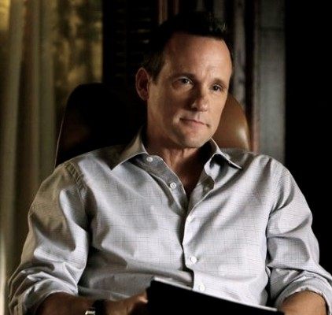
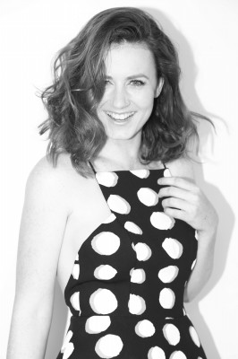

#8693 Prinzessinnen Schutzprogramm
Alternativ: Princess Protection Program
 
 IMDB-Wertung: 5.7 / 10
IMDB-Wertung: 5.7 / 10  Metascore: 0
Metascore: 0 
Aufgrund politischer Unruhen in ihrem Königreich muss Prinzessin Rosalinda Marie Montoya Fiore Princesa de Costa Luna untertauchen und sich als einfacher Teenager ausgeben. Hilfe erhält sie dabei von der gleichaltrigen Carter, deren Vater für ein Schutzprogramm zur Rettung von Prinzessinnen arbeitet. Als die zwei unterschiedlichen Mädchen entdecken wie viel sie gemeinsam haben, entsteht eine unzertrennliche Freundschaft. Werden sie es gemeinsam schaffen, Rosalindas Königreich zu retten?
Jahr: 2009
Dauer: 84 Minuten
FSK:
Land: USA Studio: Disney ChannelTonspuren: DD2.0 - ,
Untertitel:
Auflösung: 1080p (1920x1080) Größe: 5806 MB
Genre: Drama, Komödie, Familie
Regisseur: Allison Liddi-Brown
Drehbuch: Annie DeYoung
Soundtrack: John Van Tongeren
Darsteller:
- Demi Lovato als Rosalinda / Rosie
 Selena Gomez als Carter
Selena Gomez als Carter-  Nicholas Braun als Ed
 Molly Hagan als The Director
Molly Hagan als The Director- Johnny Ray Rodriguez als General Magnus Kane
 Jamie Chung als Chelsea
Jamie Chung als Chelsea- Samantha Droke als Brooke
- Robert Adamson als Donny
 Kevin G. Schmidt als Bull
Kevin G. Schmidt als Bull Dale Dickey als Helen
Dale Dickey als Helen-  Tom Verica als Joe Mason
 Brian Tester als Principal Burkle
Brian Tester als Principal Burkle- Magda Rodriguez als Mademoiselle Devereux
- Talia Rothenberg als Margaret
- Madison De La Garza als Little Girl (uncredited)
 Jeff Garlin als Bowling Alley Guy (uncredited)
Jeff Garlin als Bowling Alley Guy (uncredited)-  Marcella Lentz-Pope als Princess (uncredited)
- Sumier Mention als Khory (uncredited)
- India Oxenberg als Herself (uncredited)
- Sully Diaz als Sophia
- Jessenia Da Silva als Chloe
- Ángel Vázquez als Dimitri
- Ricardo Alvarez als Señor Elegante
- Cristina Soler als Latina Lunch Lady
- Ramon Saldana als Archbishop
- Eitan Bender als Freshman #1
- Sam Richardson als Freshman #2
- Isaac Santiago als Hairdresser
- Keshava John Rossi als Delivery Guy
- Eldim Correa als Guest
- Harrison Hapin als Freshman #3
- Laurah Guillén als Herself - Christian Recording Artist (uncredited)
Datei: X:\2009(N-Z)\Prinzessinnen Schutzprogramm (2009, FSK, 1920x1080).mkv seit 25.04.2018
Festplatte: HD 2009(G-Z)-2010(A-F)
 Es gibt insgesamt 99 Filme in der Gruppe '2009(N-Z)'
Es gibt insgesamt 99 Filme in der Gruppe '2009(N-Z)'